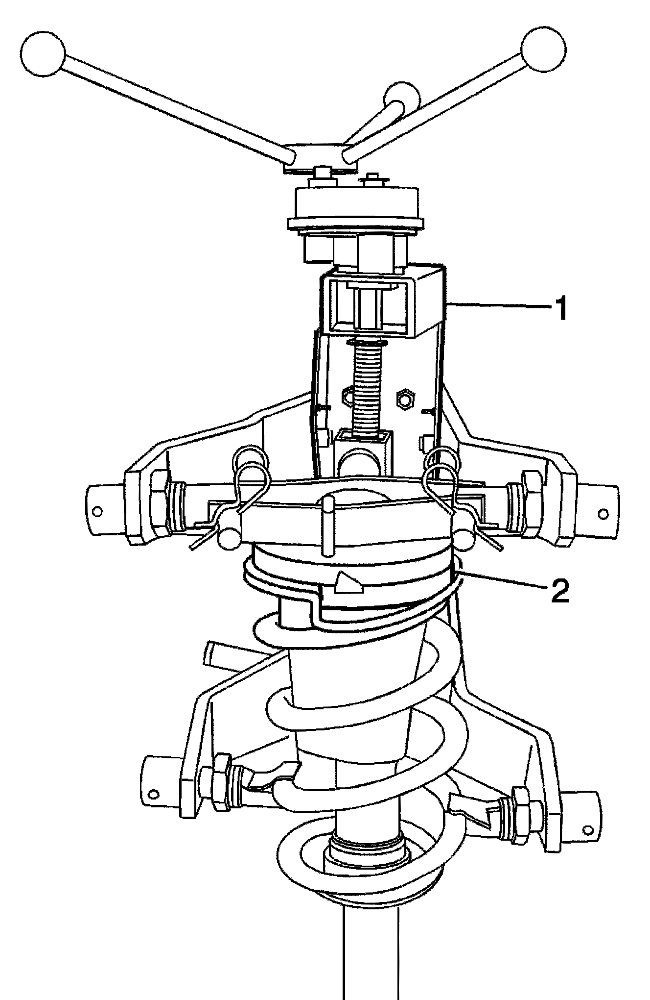

Shock, Shock Component, and/or Spring Replacement
SHOCK ABSORBER, SHOCK ABSORBER COMPONENT, OR SPRING REPLACEMENT
Special Tools
CH-48845 Spring Compressor
Removal Procedure
Important: Use only hand tools to perform the following service procedure.
Caution: Use only the CH-48845 Spring Compressor when servicing suspension components on this vehicle. Other tools may not be strong enough for the springs on this vehicle and you could be injured if you do not use Special Tool CH-48845. Failure to do so could result in serious personal injury.
1. Install the front shock absorber assembly in the CH-48845 .
Important: For vehicles equipped with electronic suspension control, ensure that the upper retaining bracket of the CH-48845 is adjusted properly so that it DOES NOT damage the front suspension mount.
2. Position the shock absorber (2) in the upper retaining bracket of the CH-48845 (1) so the shock absorber will be centered.

3. Using the CH-48845 (1), compress the front spring (2).
4. Using the appropriate wrench, hold the shock absorber shaft.
5. Using the appropriate tool, remove and discard the shock absorber nut (1).
6. Remove the front lower shock absorber (2) and the front spring lower insulator (1).
7. Remove the front suspension strut mount (1), front spring upper seat (2), front suspension strut bumper (3), front spring upper insulator (4), and the front suspension spring (5) from the spring compressor.
Installation Procedure
Important: The inboard strut mounting studs are spaced closer together than the outboard stud. The outboard stud should be facing toward the outside (closest to the technician proper alignment.
1. Assemble the front suspension strut mount (1), front spring upper seat (2), front suspension strut bumper (3), front spring upper insulator (4), and the front suspension spring (5) in the spring compressor.
2. Align the spring seat stop (3), the outboard stud (1), and the center of the lower strut mount (4). The notch in the spring seat (2) should be just to the right of the outboard stud.
Important: For vehicles equipped with electronic suspension control, ensure that the upper retaining bracket of the CH-48845 is adjusted properly so that it DOES NOT damage the front suspension mount.
3. Position the shock absorber (2) in the upper retaining bracket of the CH-48845 (1) so the shock absorber will be centered.
4. Using the CH-48845 (1), compress the front spring (2).
5. Using the appropriate wrench, hold the shock absorber shaft.
Notice: Use the correct fastener in the correct location. Replacement fasteners must be the correct part number for that application. Fasteners requiring replacement or fasteners requiring the use of thread locking compound or sealant are identified in the service procedure. Do not use paints, lubricants, or corrosion inhibitors on fasteners or fastener joint surfaces unless specified. These coatings affect fastener torque and joint clamping force and may damage the fastener. Use the correct tightening sequence and specifications when installing fasteners in order to avoid damage to parts and systems.
6. Install the shock absorber nut (1).
Tighten
For vehicles equipped with electronic suspension, tighten the shock absorber nut to 80 Nm (59 lb ft).
Tighten
For vehicles equipped with electronic suspension, tighten the electrical connector to 20 Nm (15 lb ft).
Tighten
For vehicles without electronic suspension, tighten the shock absorber nut to 60 Nm (44 lb ft).
7. Remove the shock absorber assembly from the spring compressor.
8. Install the shock absorber in the vehicle. Refer to Shock Absorber and Spring Removal and Installation.